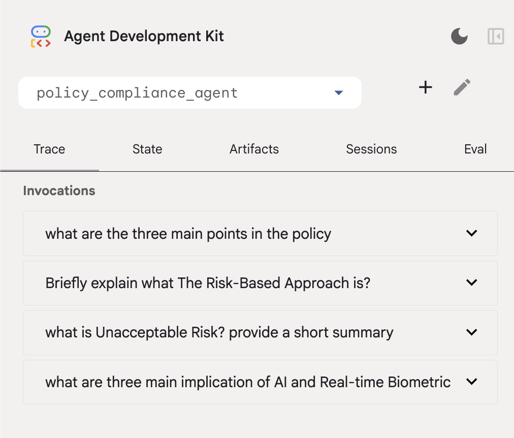

Context Caching & Compaction in Google ADK
This tutorial explores how to use the Google Agent Development Kit (ADK) to build production-grade agents that remain fast and cost-effective, even during long-running sessions.
Objectives
Gain an overview of the core problem of long context (context bloat)
Explore how Context Caching & Compaction are implemented via ADK
Explore the main patterns in Context Caching & Compaction
What to build
Policy Compliance Agent:
Imagine an agent designed to answer complex employee questions based on a 10,000-word corporate policy manual.
Context Caching:
Used to store the massive policy manual (the “Static Instruction”) on the server.
Instead of sending those 10,000 words to the LLM on every single turn, the ADK reuses a cached “fingerprint,” drastically reducing latency and costs.
Context Compression:
Is used when the employee enters a long back-and-forth troubleshooting session.
After every 3 turns, the ADK summarizes the previous history into a “compacted event,” ensuring the LLM doesn’t get overwhelmed by “Context Rot” or hit its token limit.
The Core Problem: Context Bloat
In a standard LLM request, every turn sends the entire history back to the model.
Latency: More tokens = slower “Time to First Token.”
Cost: You pay for the same instructions over and over.
Reasoning: Models can “forget” the middle of a massive context (Lost in the Middle).
Pattern: Static Instruction Caching
Note
Concept:
Context Caching allows the model to store a “fingerprint” of a large prefix (like a 50-page manual) so it doesn’t have to re-process it on every turn.
Code snippet
Implementation Pattern:
In your app.py, you configure the ContextCacheConfig. This targets the static_instruction defined in your agent.
# Configuration from your script
context_cache_config = ContextCacheConfig(
min_tokens=2048, # Trigger: Only cache if the manual is > 2k tokens
ttl_seconds=1800, # Persistence: Keep the "fingerprint" for 30 mins
cache_intervals=10 # Rotation: Refresh after 10 uses to ensure freshness
)
min_tokens: Caching has a small overhead. Don’t cache short greetings; only cache “heavy” knowledgettl_seconds: If a user stops chatting, ADK automatically deletes the cache to save resources
Pattern: Sliding Window History Compaction
Note
Concept:
Events Compaction (Compression) is the process of summarizing the last N turns into a single “Memory Event.”
Implementation Pattern:
The EventsCompactionConfig manages the “Live History” of the session.
Code snippet
# Configuration from your script
events_compaction_config = EventsCompactionConfig(
compaction_interval=3, # Frequency: Summarize every 3 turns
overlap_size=1 # Continuity: Keep the very last turn uncompressed
)
How it works (The Sliding Window)
Turns 1-2: Full history is sent.
Turn 3: ADK triggers a background summarization.
Turn 4: Instead of sending Turns 1, 2, and 3, ADK sends:
[Summary of 1-2]+[Full Turn 3 (Overlap)]+[New Query]
The “Overlap” Secret: Setting overlap_size=1 is critical. It ensures the model sees the exact wording of the previous turn, preventing the “robotic” feel that occurs when a conversation is 100% summarized.
Architectural Summary
Feature |
Target |
Key Benefit |
|---|---|---|
Caching |
static_instruction |
Reduces $ (Input Tokens) |
Compaction |
conversation_history |
Maintains Reasoning Speed |
Implementation
Python Code
import os
import google.auth
from google.adk.models import Gemini
from google.genai import types
from google.adk.agents import Agent
from google.adk.apps.app import App, EventsCompactionConfig
from google.adk.agents.context_cache_config import ContextCacheConfig
# This massive string is what we want to cache!
POLICY_MANUAL = """
https://artificialintelligenceact.eu/high-level-summary/
"""
_, project_id = google.auth.default()
os.environ["GOOGLE_CLOUD_PROJECT"] = project_id
os.environ["GOOGLE_CLOUD_LOCATION"] = "global"
os.environ["GOOGLE_GENAI_USE_VERTEXAI"] = "True"
my_agent = Agent(
name="compliance_specialist",
model=Gemini(
model="gemini-3-flash-preview", # swap for gemini-3-flash-preview when GA
retry_options=types.HttpRetryOptions(attempts=3),
),
static_instruction=f"You are a compliance expert. Use this link {POLICY_MANUAL} to access the manual when answering queries",
instruction="Be professional, cite specific sections, and always ask if the user needs further clarification."
)
# Configure the ADK Runtime
app = App(
name='policy_compliance_agent',
root_agent=my_agent,
# 1. Context Caching: Handles the 'Static Instruction' (Policy Manual)
context_cache_config=ContextCacheConfig(
min_tokens=2048, # Only trigger cache for large prompts
ttl_seconds=1800, # Keep the policy manual in cache for 30 mins
cache_intervals=10 # Automatically refresh the cache after 10 turns
),
# 2. Context Compression: Handles the 'Live History' (The Conversation)
events_compaction_config=EventsCompactionConfig(
compaction_interval=3, # Every 3 user turns, summarize the history
overlap_size=1 # Keep the most recent turn in full to maintain flow
)
)
Agent in action
Agent initiation:

First four turns & token count:

Turn |
Total token count |
|---|---|
1 |
1222 |
2 |
1548 |
3 |
2009 |
4 |
1620 |